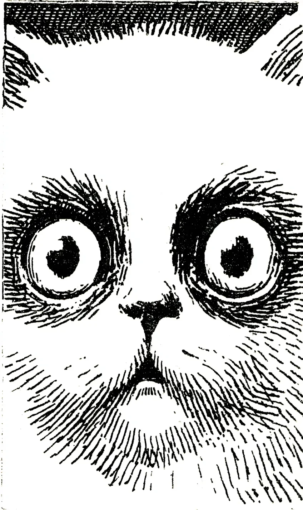

냉장고가 열렸다.
[The refrigerator opened.]
대감은 소파 위에서 몸을 일으켰다. 십이 년간 이 집을 통치하며 쌓아 올린 위엄이 순간적으로 증발했다. 냉장고 안에서 새어 나오는 빛이 그의 동공을 삼켰다.
[Daegam rose from the sofa. Twelve years of carefully cultivated dignity, ruling this house, evaporated in an instant. The light seeping from inside the refrigerator swallowed his pupils.]
참치캔이었다.
[It was a can of tuna.]
아니, 정확히 말하자면 참치캔이 아니었다. 집사의 손이 참치캔을 지나쳐 그 뒤에 있는 된장찌개 용 두부를 꺼내는 것이었다.
[No, to be precise, it wasn't a can of tuna. The butler's hand was passing over the tuna to retrieve the tofu behind it, for doenjang-jjigae.]
대감의 철학 체계가 무너졌다.
[Daegam's philosophical framework collapsed.]
그는 자신이 우주의 중심이라고 믿었다. 모든 냉장고의 개폐는 자신을 위한 의식이며, 모든 캔따개의 소리는 자신에게 바치는 찬송이라고. 그런데 두부라니. 두부가 이 신성한 서열 체계의 어디에 위치한단 말인가.
[He had believed himself the center of the universe. That every opening of the refrigerator was a ritual performed for him, and every sound of a can opener a hymn offered in his honor. But tofu. Where exactly did tofu fall in this sacred hierarchy.]
대감은 바닥에 내려와 집사의 발목에 이마를 부딪쳤다. 한 번. 두 번. 존엄을 버린 것이 아니었다. 전략적 후퇴였다.
[Daegam descended to the floor and bumped his forehead against the butler's ankle. Once. Twice. He had not abandoned his dignity. It was a strategic retreat.]
집사가 참치캔을 열었다.
[The butler opened the tuna can.]
대감은 천천히 눈을 감았다. 우주의 질서가 복원되었다. 자신의 위대함에 대한 의심 따위는 애초에 없었다.
[Daegam slowly closed his eyes. The order of the universe had been restored. Any doubt about his own greatness had never existed in the first place.]